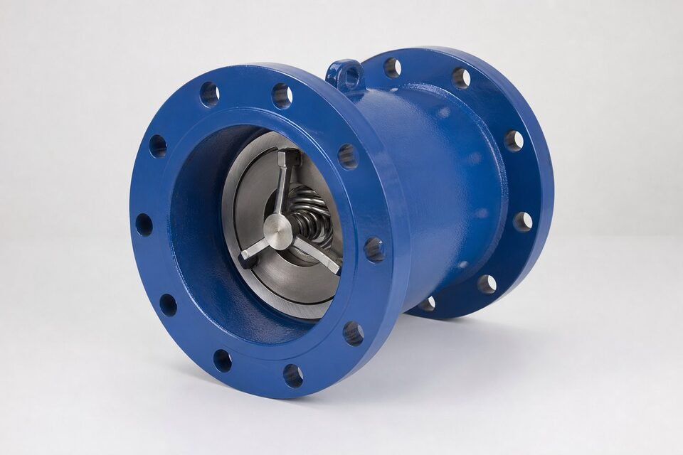

نازل چک چیست؟
شیر یکطرفه نازلی طرحی از خانواده شیرهای آکسیال است: دیسک روی یک محور مرکزی با فنر، در مسیری بسیار کوتاه حرکت میکند و نشیمنگاه به شکل نازل طراحی شده است. این هندسه دو مزیت اصلی دارد: اول، دیسک در حالت باز افت فشار کمی ایجاد میکند؛ دوم، به دلیل مسیر کوتاه و نیروی فنر، بسته شدن پیش از معکوس شدن کامل جریان اتفاق میافتد. همین بسته شدن فوق سریع است که نازل چک را به یکی از بهترین گزینهها برای جلوگیری از ضربه قوچ تبدیل کرده است.

ضربه قوچ و نقش نازل چک
وقتی پمپ ناگهان متوقف میشود، جریان رو به جلو کاهش مییابد و سپس معکوس میشود؛ اگر دیسک شیر یکطرفه هنوز باز باشد، ستون سیال معکوسشده با شدت به آن برخورد کرده و موج فشار مخربی ایجاد میکند. شدت این موج به سرعت بسته شدن شیر بستگی دارد: هرچه دیسک زودتر بنشیند، موج ضعیفتر است. نازل چک با فنر و مسیر کوتاه، این بسته شدن را در کسری از زمان سوئینگ انجام میدهد و در بسیاری موارد، نیاز به تجهیزات جانبی کنترل ضربه قوچ را کاهش میدهد.
مقایسه با طرحهای دیگر
| معیار | نازل چک | دوپلیت | سوئینگ |
|---|---|---|---|
| سرعت بسته شدن | بسیار سریع | سریع | کند |
| افت فشار در حالت باز | کم | کم | بسیار کم |
| حساسیت به ضربه قوچ | بسیار کم | کم | زیاد |
| ساختار | آکسیال فنری | ویفری دو دیسک | لولایی |
| سایز رایج | کوچک تا متوسط و بزرگ | کوچک تا بزرگ | متوسط تا بزرگ |
نازل چک در محافظت از پمپها از همه سریعتر عمل میکند.
معیارهای انتخاب
انتخاب نازل چک با تحلیل شرایط توقف پمپ شروع میشود: دبی، هد و شتاب معکوس شدن جریان تعیین میکنند که چه سرعت بستهشدنی لازم است. در ایستگاههای پمپاژ با خطوط طولانی، معمولاً تحلیل گذرا انجام میشود و نازل چک به عنوان بخشی از راهحل انتخاب میگردد. متریال فنر باید متناسب سیال باشد؛ چون شکست فنر به معنای از دست رفتن بسته شدن سریع است. در سایزهای بزرگ، هدایت دیسک و دسترسی برای سرویس نیز باید با سازنده بررسی شود.
نصب و نکات عملیاتی
نازل چک در خطوط افقی و عمودی قابل نصب است اما جهت فلش روی بدنه باید دقیقاً با جهت جریان منطبق باشد. فاصله مناسب بعد از پمپ و قبل از زانو، عملکرد هیدرولیکی را بهبود میدهد. در نقاطی که احتمال وجود ذرات درشت وجود دارد، باید از ورود اجسام خارجی به نشیمنگاه جلوگیری شود چون نشتی یا گیر کردن دیسک در این طرح، مزیت اصلی آن را از بین میبرد. بازرسی دورهای فنر و نشیمنگاه، به ویژه در سرویسهای با سیکل کاری بالا، توصیه میشود.
جمعبندی
نازل چک سریعترین عضو خانواده شیرهای یکطرفه است و در نقاطی که ضربه قوچ تهدید اصلی است، انتخاب اول محسوب میشود. با تحلیل شرایط توقف، انتخاب فنر متناسب سیال و نصب صحیح، این شیر از پمپها و خطوط گرانقیمت محافظت میکند و هزینههای ناشی از حوادث ضربه قوچ را به حداقل میرساند.
سوالات رایج
چرا نازل چک سریعتر از سوئینگ میبندد؟
مسیر حرکت دیسک بسیار کوتاه است و فنر مرکزی آن را به سمت بسته شدن هل میدهد؛ در نتیجه پیش از معکوس شدن کامل جریان، دیسک روی نشیمنگاه نشسته است.
کجا به این سرعت نیاز داریم؟
در دیسچارج پمپها و کمپرسورهایی که توقف ناگهانی آنها ضربه قوچ ایجاد میکند؛ بسته شدن سریع، موج فشار را به حداقل میرساند.
آیا افت فشار آن زیاد است؟
در حالت باز افت فشار رقابتی دارد؛ چون دیسک درون مسیر قرار میگیرد اما طراحی آیرودینامیک آن را محدود نگه میدارد. برای نقاط با محدودیت شدید افت فشار باید محاسبه انجام شود.
این شیر با چه استانداردی ساخته میشود؟
معمولاً تحت مراجع شیرهای یکطرفه ویفری یا به صورت فلنجدار، با تست مطابق مرجع تست شیرآلات؛ متریال بدنه و فنر نیز باید در سفارش مشخص شود.
مطالب مرتبط
- راهنمای جامع شیر یکطرفه
- مقایسه سوئینگ، لیفت و دوپلیت
- راهنمای شیرهای یکطرفه دوپلیت
- راهنمای تست و معیارهای نشتی شیرآلات
با ذکر سایز، کلاس و متریال فنر، نازل چک با بسته شدن سریع به همراه مدارک تست عرضه میشود.
مشاهده صفحه محصول ← ثبت RFQ همین محصولتامین این تجهیزات را به پیشرو تجهیز فرتاک بسپارید
شرکت پیشرو تجهیز فرتاک تامینکننده تخصصی تجهیزات صنعتی برای پروژههای نفت، گاز، پتروشیمی، فولاد و نیروگاهی است. برای دریافت پیشنهاد فنی و قیمت، استعلام (RFQ) خود را ثبت کنید تا کارشناسان مهندسی فروش در کوتاهترین زمان پاسخ دهند.
- تامین شیرآلات صنعتیخانواده کامل شیر با گواهی مواد و تست
- تامین تجهیزات صنایع نفت و گازپکیج مواد مطابق وندورلیست